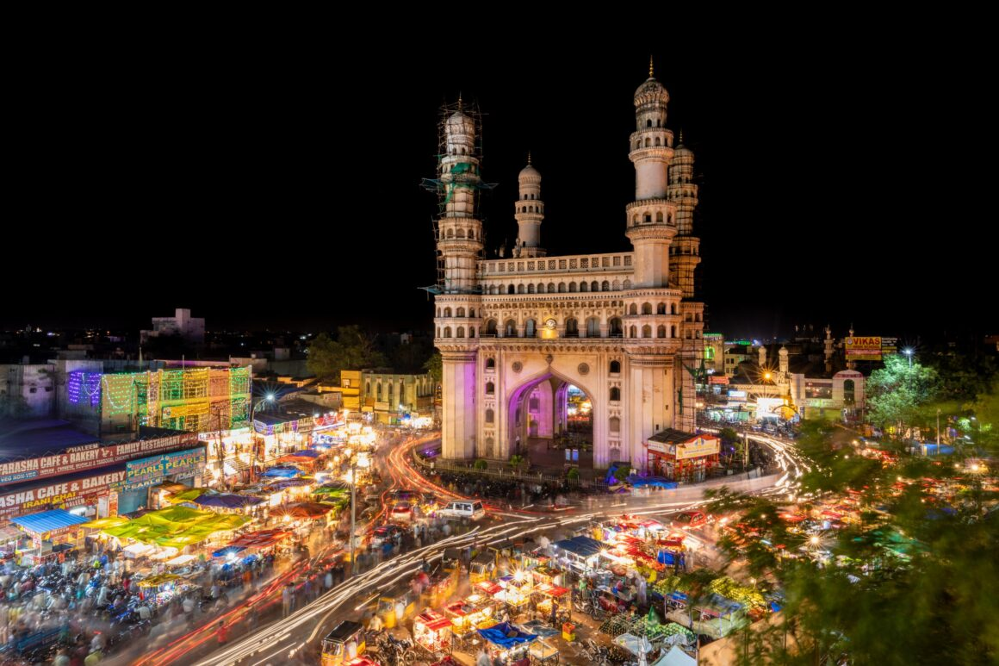

Hyderabad



Hyderabad, the capital of Telangana, is a vibrant city known for its rich history and modern development. Famous for the iconic Charminar, Golconda Fort, and its world-renowned Hyderabadi Biryani, the city beautifully blends tradition with innovation.
Often called “Cyberabad”, Hyderabad is a major IT hub in India. It houses many global tech companies and startups. With its warm culture, delicious cuisine, and rapid growth, Hyderabad is one of India's most dynamic metropolitan cities.